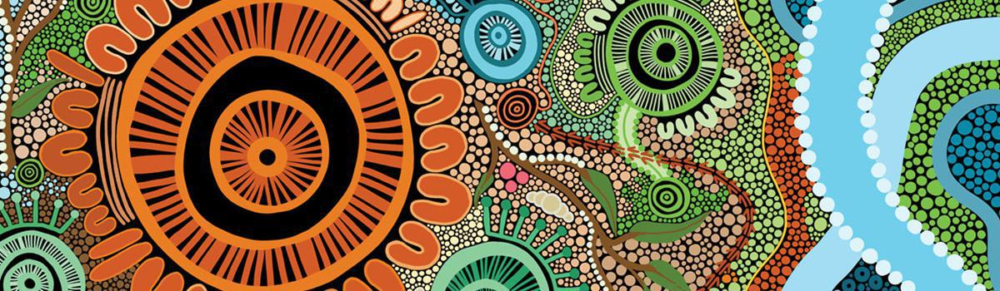
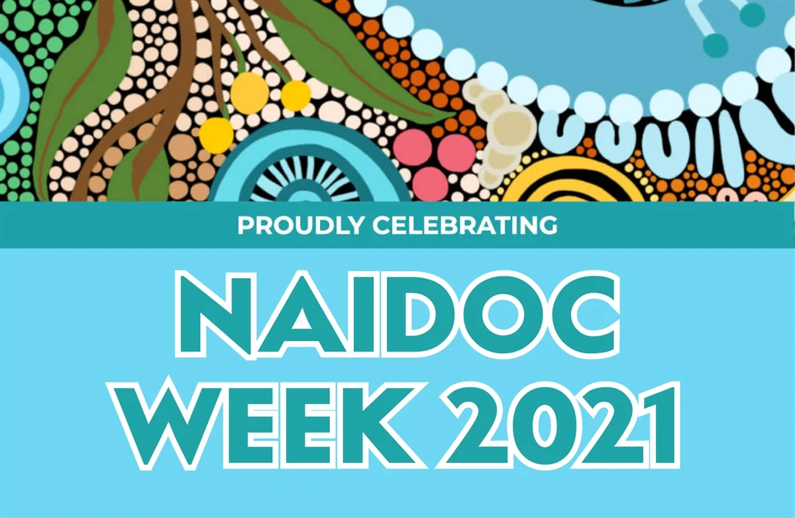

Heal Country! – calls for stronger measures to recognise, protect, and maintain all aspects of Aboriginal and Torres Strait Islander culture and heritage.
This logo is the 2021 National NAIDOC logo.

HEAL COUNTRY 2021
The respect and relationship Aboriginal and Torres Strait Islander peoples have with Country is based on living here for centuries with generations sharing their knowledge and understanding to protect and value all that Country means regards to culture and heritage and what it provides for all, when cared for with respect.
Our Country is hurting. We are considered a lucky country in many ways, but why is our Great Barrier Reef dying, bushfires even more severe, more droughts and flooding and more changes in our beautiful Country? What can all of us living in Australia do to respect and protect our Country and get to know it much better too?

We are all equal and we can all learn so much from one another. How lucky we are that we can learn more about our Country from our First Nations people.
NAIDOC Week is celebrated in so many places and in so many ways.”It is an opportunity for all Australians to come together to celebrate the rich history, diverse cultures and achievements of Aboriginal and Torres Strait Islander peoples as the oldest continuing cultures on the planet.”
Whether we are at home, in Early Learning Centres, schools, businesses, communities, cities, villages, near the water, with our families, wherever we are we can celebrate, learn and do things for the greater good. There are stories to tell, books to read, songs and dances, painting and drawing, gathering together and actions to take. We can all help heal our country.
If you would like to share on this website what you have done in NAIDOC Week and or thoughts, ideas, questions, drawings or suggestions about Heal Country, please send it
HERE